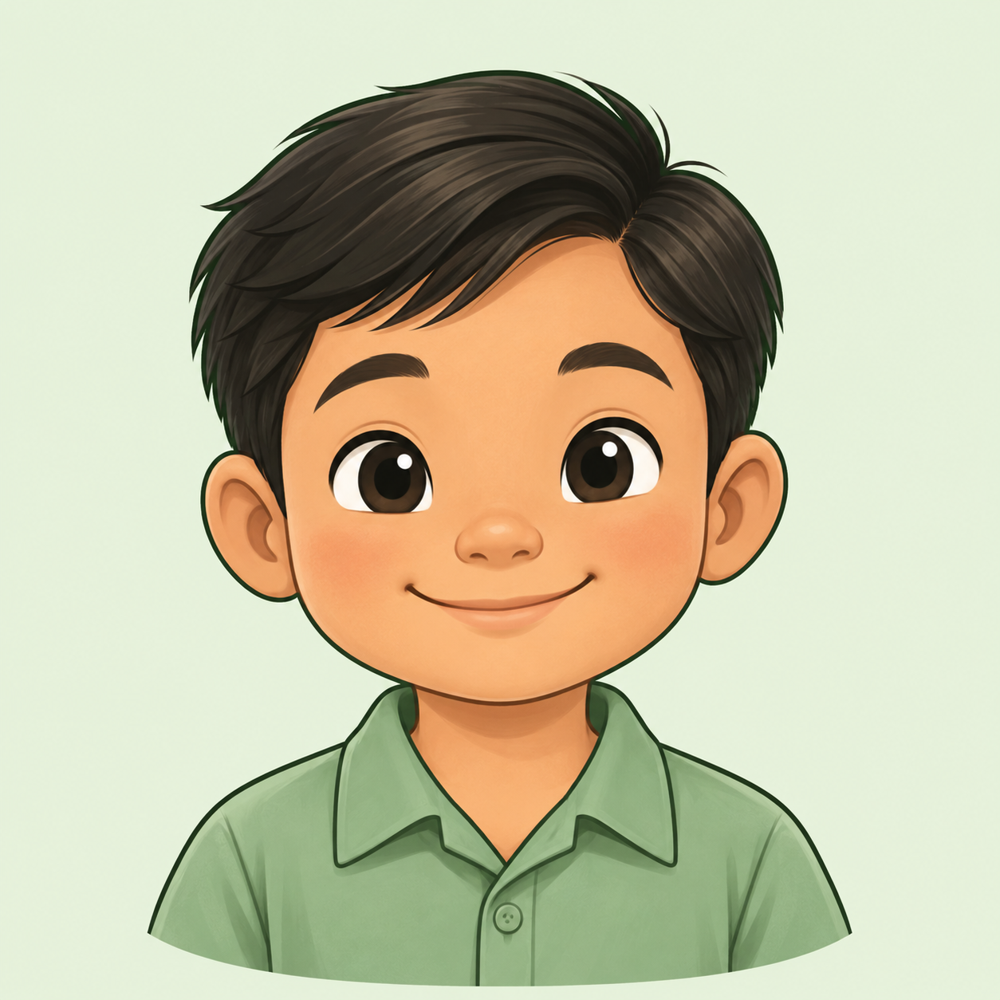
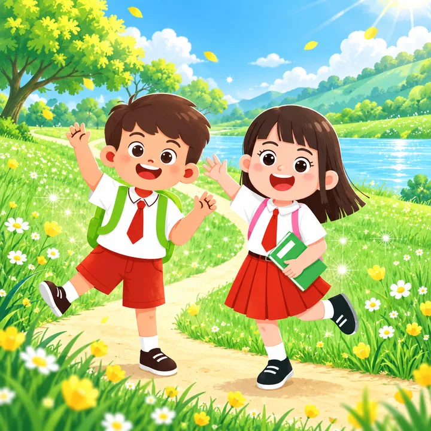

Sign in with a saved account, even offline
No internet? The sign-in page still opens. Pupils who saved their account on this phone tap their picture and go straight to the levels they saved. Their answers wait on the phone and upload by themselves when the internet is back.
1
No internet: the sign-in page still opensA small "No internet" pill shows. Each saved pupil shows how many levels are saved. Teachers need internet, so they are greyed.
Offline · saved accounts only


WELCOME BACK
Who’s learning today?
Tap your picture to continue.
 PUPIL
PUPIL
PUPILTEACHER
Teacher MariaNeeds internetSigning in with an ID and password needs the internet. Saved pupils can learn offline with the levels they saved.
2
Maria taps her pictureA friendly card opens her saved lessons. No password is needed, just like the online saved sign-in.
WELCOME BACK
Who’s learning today?

Hi, Maria!
Opening your saved lessons. You can learn without internet.
3
Her dashboard, in offline modeSaved levels open as usual. Levels that are not saved say "Needs internet".
YOUR BULIG SPACEMaria Pupil

✓ Saved on this phoneLevel 5 · Listening and VocabularyNext: My Toys, page 2Continue learning →

Level 6Needs internet
4
Answers wait on the phoneAfter each activity she still gets her stars. A chip shows how many answers are waiting to upload.
★★★
Great job, Maria!
3 answers waiting to uploadSaved on this phone. They upload by themselves when the internet is back.
Next activity →5
Internet is backBULIG signs Maria in with her saved key and uploads her answers. Her XP and badges are added.
Internet is back!Uploading Maria’s answers… 2 of 3
All sent!3 answers from Maria are saved to BULIG.
+30 XP
+30 XP
YOUR BULIG SPACEMaria Pupil
Level 5 · Listening and Vocabulary5 of 23 done
6
A saved pupil with no saved levelsJuan's account is saved, but no levels are. BULIG explains what to do next time.
WELCOME BACK
Who’s learning today?
No saved lessons yet, Juan
Next time you have internet, open My lessons and tap Save for offline on your level. Then you can learn here without internet.
OkayHow it stays safe
- Only accounts saved with "Keep me saved" on this phone can open offline. Typing an ID and password still needs the internet.
- Each pupil sees only their own saved levels, and answers are kept separately for each child, even when siblings share a phone.
- If the teacher resets a pupil's password, the saved key stops working. The answers stay on the phone until the pupil signs in once with the new password, then they upload.
- Teachers and admins still need the internet to sign in, because their pages show live class data.